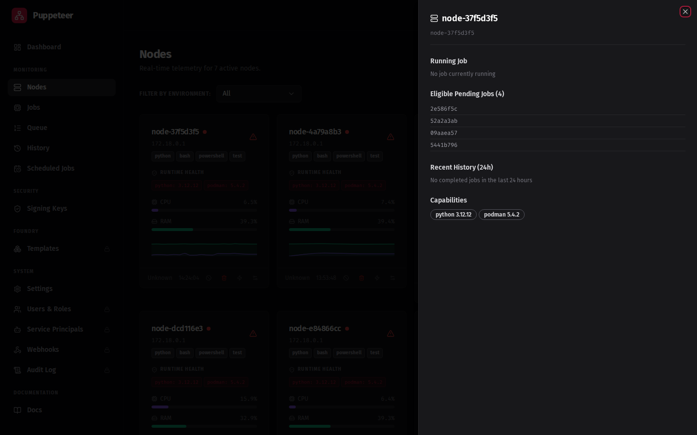

Enroll a Node
Nodes self-enroll over mTLS — they generate a certificate signing request and get a signed client cert from the control plane. You provide a JOIN_TOKEN that embeds the Root CA so the node can establish trust automatically.
Step 1: Generate an enrollment token
- In the dashboard, go to Nodes
- Click Generate Token
- Click Copy JOIN_TOKEN — this copies the enhanced token (base64-encoded JSON with the Root CA embedded)
Use the dashboard Copy button
The raw API endpoint POST /api/enrollment-tokens returns only the token hex string. The enhanced JOIN_TOKEN — which includes the Root CA for mTLS bootstrap — is only available via the dashboard Copy JOIN_TOKEN button.
If you give the node the raw hex string, you will see the node failing with a TLS error rather than the expected log line:
Detected Enhanced Token. Bootstrapping Trust...
Always copy the JOIN_TOKEN from the dashboard.
Log in to get a JWT:
TOKEN=$(curl -sk -X POST https://<your-orchestrator>:8001/auth/login \
-H 'Content-Type: application/x-www-form-urlencoded' \
-d 'username=admin&password=<your-password>' | python3 -c "import sys,json; print(json.load(sys.stdin)['access_token'])")
Then generate and retrieve the enhanced token:
curl -sk -X POST https://<your-orchestrator>:8001/admin/generate-token \
-H "Authorization: Bearer $TOKEN" \
| python3 -c "import sys,json; d=json.load(sys.stdin); print(d['token'])"
The token field contains the full base64-encoded JOIN_TOKEN with the Root CA embedded.
Log in to get a JWT. Use -SkipCertificateCheck to allow connections to the self-signed certificate (PowerShell 7+ required):
$response = Invoke-RestMethod -Method POST `
-Uri "https://<your-orchestrator>:8001/auth/login" `
-ContentType "application/x-www-form-urlencoded" `
-Body "username=admin&password=<your-password>" `
-SkipCertificateCheck
$TOKEN = $response.access_token
Then generate and retrieve the enhanced token:
$tokenResponse = Invoke-RestMethod -Method POST `
-Uri "https://<your-orchestrator>:8001/admin/generate-token" `
-Headers @{Authorization = "Bearer $TOKEN"} `
-SkipCertificateCheck
$JOIN_TOKEN = $tokenResponse.token
Write-Host "JOIN_TOKEN: $JOIN_TOKEN"
The token field contains the full base64-encoded JOIN_TOKEN with the Root CA embedded.
Admin password (cold-start installs)
If you started Axiom using compose.cold-start.yaml, the default login is admin / admin. You will be prompted to change it on first login.
Step 2: Configure node connectivity
Choose the AGENT_URL value that matches your deployment scenario:
| Scenario | AGENT_URL |
|---|---|
| Cold-start compose (node in same compose network) | https://agent:8001 |
| Server compose, node on same host | https://puppeteer-agent-1:8001 |
| Remote host / separate machine | https://<hostname-or-ip>:8001 |
| Docker Desktop (Mac or Windows) | https://host.docker.internal:8001 |
If your node is on a custom Linux bridge network, find the gateway with:
ip route | awk '/default/ {print $3}'
Step 3: Install the node
The one-liner downloads and runs the universal installer script hosted on the orchestrator:
curl -sSL https://<your-orchestrator>/installer.sh | bash -s -- --token "<JOIN_TOKEN>"
Replace <your-orchestrator> with your orchestrator's hostname or IP (e.g., 10.0.0.5:8001 or my-orchestrator.example.com).
The installer script:
- Detects Docker or Podman on your system
- Downloads a ready-to-run
node-compose.yamlfrom the orchestrator - Starts the node container automatically
Getting the compose file without running it
The orchestrator also serves the generated compose file directly if you want to inspect or customise it before running:
curl -sSL "https://<your-orchestrator>/api/installer/compose?token=<JOIN_TOKEN>" > node-compose.yaml
docker compose -f node-compose.yaml up -d
For full control over the configuration, create the compose file manually.
Create node-compose.yaml with the following content, substituting your JOIN_TOKEN and AGENT_URL:
services:
puppet-node:
image: ghcr.io/axiom-laboratories/axiom-node:latest
environment:
NODE_TAGS: general,linux
JOB_IMAGE: docker.io/library/python:3.12-alpine
AGENT_URL: https://agent:8001
JOIN_TOKEN: <paste-your-enhanced-token-here>
ROOT_CA_PATH: /app/secrets/root_ca.crt
EXECUTION_MODE: docker
volumes:
- node-secrets:/app/secrets
- /var/run/docker.sock:/var/run/docker.sock
- /tmp:/tmp # Shared with job runner containers
networks:
- axiom_default
volumes:
node-secrets:
networks:
axiom_default:
external: true
Network name
The axiom_default network is created automatically when you run compose.cold-start.yaml.
The network name is derived from the directory you placed the compose file in — if the file is
in a directory other than the default, you may see a different prefix. Run
docker network ls | grep default to find the exact name and update axiom_default accordingly.
EXECUTION_MODE=docker
When the node container runs inside Docker, set EXECUTION_MODE=docker. This tells the node to spawn job containers using the host's Docker daemon via the mounted socket (/var/run/docker.sock).
You must also add the Docker socket to the node's volumes:
volumes:
- node-secrets:/app/secrets
- /var/run/docker.sock:/var/run/docker.sock
- /tmp:/tmp
Then update your compose to mount the socket:
services:
puppet-node:
image: ghcr.io/axiom-laboratories/axiom-node:latest
environment:
...
AGENT_URL: https://agent:8001
EXECUTION_MODE: docker
volumes:
- node-secrets:/app/secrets
- /var/run/docker.sock:/var/run/docker.sock
- /tmp:/tmp
networks:
- axiom_default
networks:
axiom_default:
external: true
Then start the node:
docker compose -f node-compose.yaml up -d
For full control over the configuration, create the compose file manually.
Create node-compose.yaml with the following content, substituting your JOIN_TOKEN and AGENT_URL. On Windows with Docker Desktop, use host.docker.internal as the gateway — see the connectivity table in Step 2.
services:
puppet-node:
image: ghcr.io/axiom-laboratories/axiom-node:latest
environment:
NODE_TAGS: general,windows
JOB_IMAGE: docker.io/library/python:3.12-alpine
AGENT_URL: https://host.docker.internal:8001
JOIN_TOKEN: <paste-your-enhanced-token-here>
ROOT_CA_PATH: /app/secrets/root_ca.crt
EXECUTION_MODE: docker
volumes:
- node-secrets:/app/secrets
- /var/run/docker.sock:/var/run/docker.sock
volumes:
node-secrets:
Docker socket on Windows
Even though you are on Windows, the node container runs as a Linux container inside Docker Desktop's WSL2 VM. The VM exposes the Docker socket at the standard Unix path /var/run/docker.sock. Do not use the Windows named pipe (//./pipe/docker_engine) — Linux containers cannot access Windows named pipes.
Then start the node (the docker compose command works identically in PowerShell):
docker compose -f node-compose.yaml up -d
Step 4: Verify enrollment
Check the node logs:
docker compose -f node-compose.yaml logs -f
On successful enrollment you should see:
Detected Enhanced Token. Bootstrapping Trust...
Node enrolled successfully
Then check the dashboard — go to Nodes and the node should appear with status ONLINE within 30 seconds as it begins sending heartbeats.
What the Nodes view looks like
Once your node is enrolled and sending heartbeats, the Nodes page shows live status:

Click any node row to open the node detail drawer with capability information, stats history, and enrollment details:

Next: First Job →